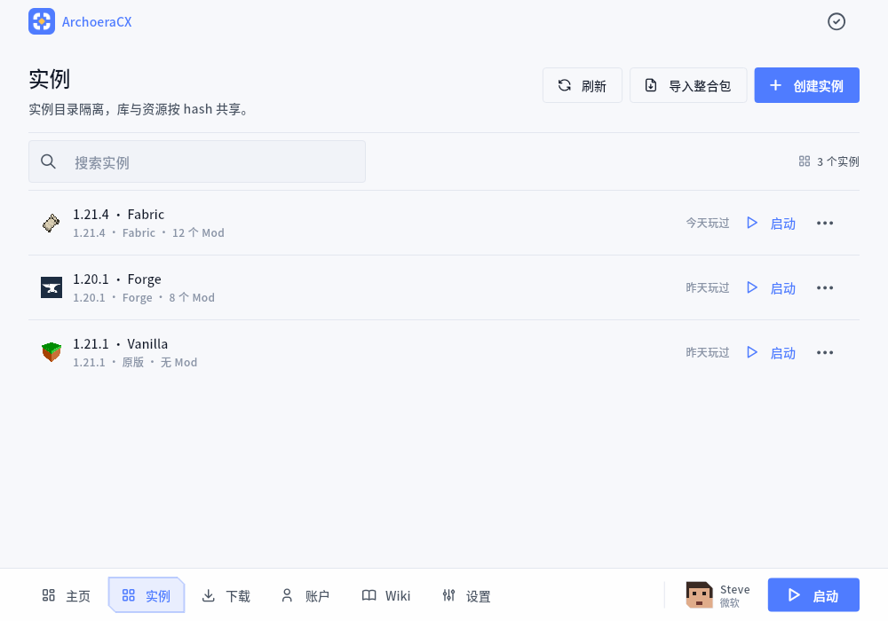
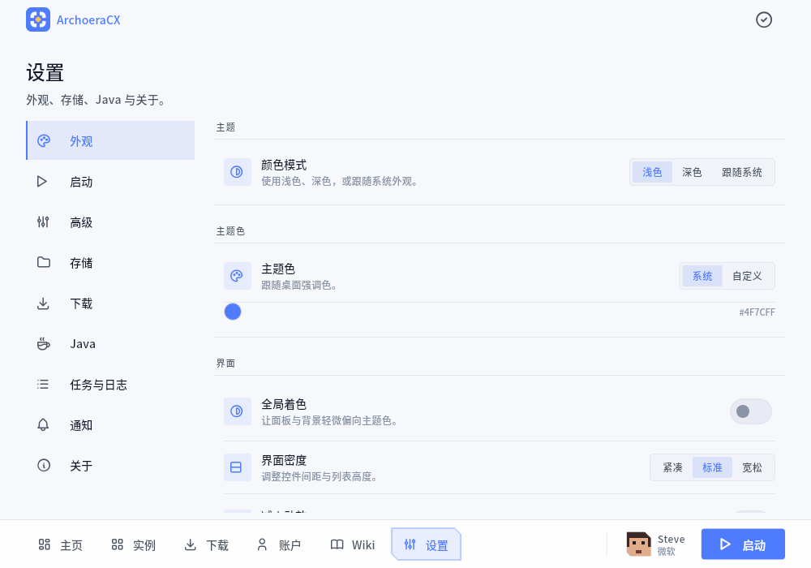
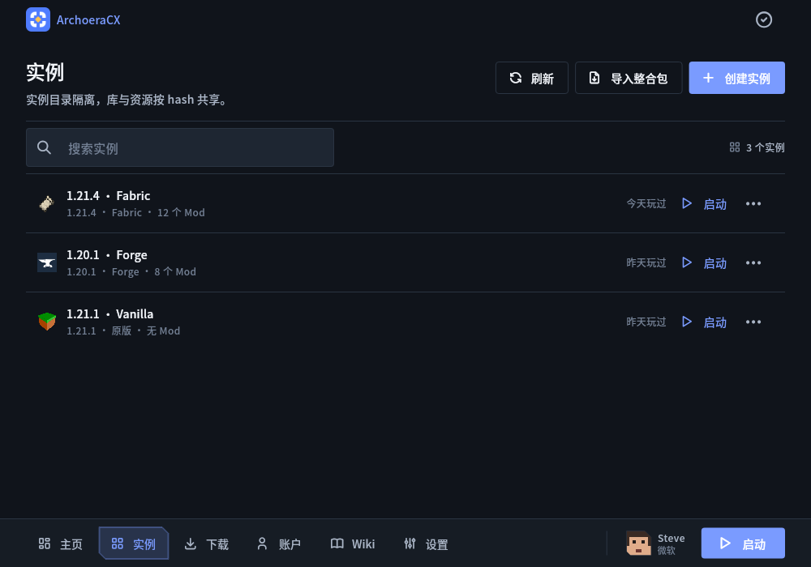
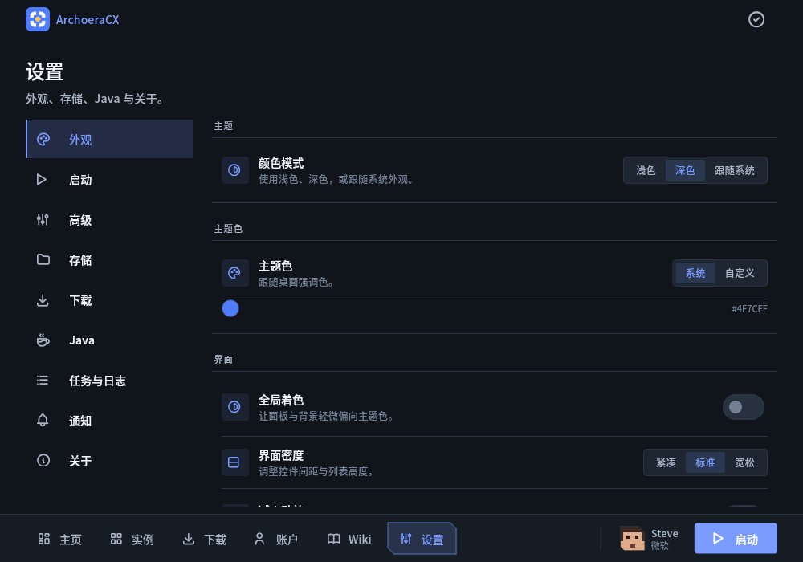

CORE
生命周期与路由
C++20 核心：唯一枢纽，所有任务都在这里发生。
整体复杂，但分工明确。 即使出错，也无所顾虑。
CORE
C++20 核心：唯一枢纽，所有任务都在这里发生。
INST
可选的独立目录、复制与覆盖设置
LOAD
Fabric、Quilt、Forge、NeoForge 的安装、修复、更新与版本选择
PACK
Modrinth 与本地 .mrpack 的一键导入与主动修正
NET
Rust 强力驱动的下载执行，支持分片续传与取消
ID
使用标准 Microsoft OAuth + PKCE，一次授权，长期使用
明暗作为底色，线条作为表达。以最简单的方式，表达最纯粹的能力




C++20 作为“交换机”，负责协调 Flutter、C# 等组件； 全程进程内 FFI；除 OAuth 期间短暂的 loopback 回调外，无需端口通信
页面、主题、动效与窗口
API、运行规则与实例索引
校验哈希、原子写入、分片续传
监听器批量 drain；拒绝 Timer.periodic “猜”进度。
调用只查表，导出层不做分支。
拒绝不明确逃逸，明确的hash校验，完整的白名单机制
完整的依赖、逐模块编译与打包测试矩阵在构建文档中； 在替换现有实例前，建议先备份您的数据。
# 1. 获取源码
git clone https://github.com/BetaStudio2/ArchoeraCX.git
# 2. 构建原生模块
cd ArchoeraCX/app
./tool/build-native.sh
# 3. 准备并运行
flutter pub get && flutter gen-l10n
flutter run -d linuxMicrosoft 登录需要构建时注入 client ID。
tar.gz / deb / rpm / Arch / AppImage / Flatpak / NixOS
tar.gz / dmg
便携 zip / Installer